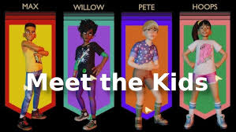

Home
building
killing bugs
crafting
survival
researching items
fighting bosses
you can play with friends family or friends that are online. this game is crossplay
Tip: if you don't know how to make your game crossplay Open the game on your device, and from the game's Options menu, search for Enable Crossplay and switch it on.
you can pick who you wont to be you can be Max, Pete, Hoops, and Willow. this is what they look like
